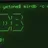

Memcached Protocol
Drop-in compatible with the memcached text protocol — existing clients work out of the box.

MirDB is a persistent key-value store that speaks the memcached protocol, providing a drop-in replacement for existing memcached deployments with durable storage that survives restarts.
Drop-in compatible with the memcached text protocol — existing clients work out of the box.
Data persists to disk via LSM-tree SSTables — survive restarts without losing your data.
In-memory skip-list data structure delivers fast writes with logarithmic lookup complexity.
Minor and major compaction merge SSTables in the background, reclaiming space and improving read performance.
Everything you need to get the most out of MirDB, from API references to community support.